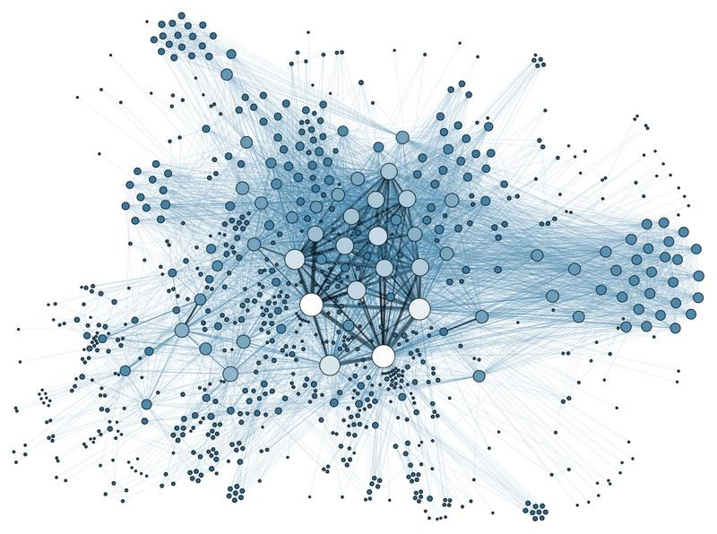
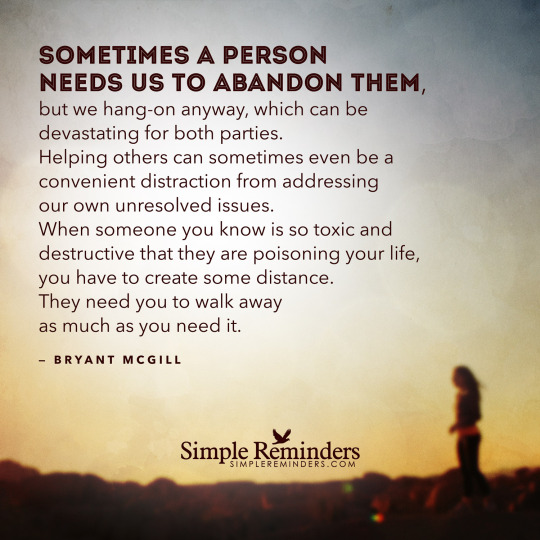
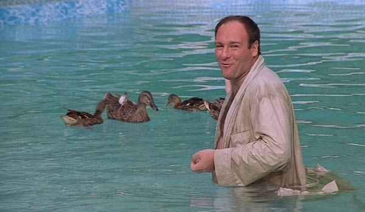

This post continues our discussions on using our thoughts to navigate our world-lines. As I have repeatedly stated, our universe is a series of world-lines that our consciousness navigates through. By controlling our thoughts, we can successfully navigate though the world-lines to achieve happiness, and indeed our greatest desires. This particular post discusses things that we must be alert to, and things that we need to avoid when conducting a prayer campaign.
You see, it is not enough to be able to conduct a prayer / intention campaign. You also must control the thoughts outside that campaign.
Thoughts and their application.
Thoughts are not some imaginary “thing”. They are real. They are the only thing that you consciousness creates.
Think of a thought as a (currently unrecognized) state of quanta. It is generated by our consciousness. A thought is not tied to a specific world-line, though it can be associated with one. A thought does not have a physical dimension, and dos not follow the normal dimensions of "time". A thought can influence physical matter. A thought can be stored as a memory outside of a world-line.
There are many kinds of thoughts.
For our purposes, let’s take a moment to define some key ideas regarding specific types of thoughts.
- “Pure Thoughts” refers to thinking one series of thoughts only and absolutely nothing else.
- “Bad Thoughts” refer to thoughts that pull you away from your desired intention. For instance, if your intention campaign is to live a happy pleasant life, then a “bad thought” would be one that would get your upset.
- “Good Thoughts” are thoughts that either work towards your intention campaign, or are neutral.
- “Direct Thought“. These are thoughts that lead fundamentally to a concept within the intention campaign. For instance, if your campaign was for owning a sports car, the thought of a racing engine in a race car would be a “direct thought”.
Prior History
Most people have lived a life with no prayers, no control over their thoughts and no control over intention. They have, pretty much, been “swaying in the breeze” all these many, many years aimlessly. All the time, it has been the strong thoughts of others, and the manipulations by others (such as the news media and commercials) that have caused them to redirect their thoughts.
Suddenly they gradually come to a place where they realize that they are not where they want to be. Their life does not match their desires.
Yet, they don’t know how to get out of that situation. And yes, many then find this website; Metallicman and see that there is a way out. That they can navigate out of their situation using manual world-line travel.
But there is a problem.
They are absolutely surrounded by others that do not share their vision. They are entangled in a spiders’ web of complex thought associations, thought manipulations, thought poisoning, and thought suppression.

Negative influences from others
In order to be able to successfully navigate your way out of your current situation, You will need to reduce the influences that already suppress your self-actuation.
Here goes…
- Negative people. One negative person can undo all the positive affirmations that you make. They don’t even need to say anything or do anything. Their mere presence is like this big sponge that sucks the living energy out of you. And as they suck, suck, suck away… so goes any positive efforts that you have established in a prayer campaign.
You need to do everything in your power to avoid negative people.
This doesn’t only mean friends, strangers, co-workers and ex-lovers. It also, and for some… especially means, family.
![Scene from the movie "Home for the Holidays". The movie, which is about the Thanksgiving family reunion from hell, is not exactly a comedy and yet not a drama, either. Like many family reunions, it has a little of both elements, and the strong sense that madness is being held just out of sight. Have we not all, on our ways to family gatherings, parked the car a block away, taken several deep breaths, rubbed our eyes and massaged our temples, and driven on, gritting our teeth? That is not because we do not love our families, but because we know them so very, very well.](../assets/img/things-to-be-aware-of-and-cautions-to-take-while-conducting-a-prayer-int-e1cd8f/SNAG-GIF-00004-6-25-2020-1024x720.gif)
These negative people do NOT have the right to suppress you; your actions, your dreams or your thoughts. No mater what official role that they have in your life. If they are bad, negative… then they are dangerous. You need to cut them out of your life, and to prevent them thinking about you.
But…
But…
You need to do so gradually and happily. Not shockingly and not suddenly. Or they will be filled with negative emotion and those emotions will generate a tidal wave of thoughts that will completely collapse any good that you have created.
Be slow, and methodical. Establish a time line and stick to it.
What ever you do, you don’t want them to go from church to church and arrange around-the-clock prayer parties. Parties in which they concentrate on the imaginary horrors that they have built up in their minds. Often fed by salacious soap-operas and horror tragedies.
Actually happened. Back in the late 1980's I was offered a job out of state. This was, perhaps a twelve hour drive away from our childhood homes. It was a great opportunity. More money, interesting work, great career move, and an adventure in a new place. Both I and my wife wanted us to accept that job out of state. However, her mother did not want that. She wanted us to stay local. Even though work was scarce, and we would be stuck living in a rented mobile home on a local farmer's crop land, her mother insisted that we not leave. But we left anyways. We discovered much later that after we left, she had a regular fit. And part of that fit was a "shotgun" approach to get us to return back "home". Some of the things that she did was illegal. Like accusing me of doing things, and trying to get the police to arrest me. While other things were more conventional. But one of the things that she did was noteworthy here. After we had left, she had arranged perhaps 25 different churches to have staged prayer groups focusing on me losing my job and she coming back home. Leaving her terrible, and "abusive" husband. Hundreds of people were "praying" for us. They would picture, most vividly the horrors that her mother would say, and others would amplify it. With each story getting worse and worse. Each week things and their imagination getting more and more out of control. Their thoughts, magnified by a hundred fold, would saturate the world-lines. These groups would hold 24 - 7 prayers. Where an individual would focus on how terrible our marriage was, and how I would lose my job and how our world would collapse, and where she would be "saved" by Jesus Christ back in the loving arms of her family. So... Suzy would pray for one hour from 2:00 to 3:00, then Sam would pray from 3:00 to 4:00, then Jody would pray from 4:00 to 5:00...etc. This would continue through perhaps a couple of hundred people, and last for weeks...
Remember people…
…thoughts create realities and define your world-line.
This is a very serous issue and planning is required.

If you are going to isolate yourself from a strong-willed person, then please in for the Love of God, don’t make any fast moves. Be slow, methodical and careful. Gradually and slowly remove the claws of others from your back and then move forward in a positive way towards your intention.
People to avoid…
- Anyone with any kind of mental illness. (Whether officially recognized or not.)
- Anyone with a drug addiction.
- Members of any kind of cult.
- People with strong “fringe” religious beliefs.
- Members of an occult organization.
- Any “strong willed” person.
If you are serious and want to have the intention campaign actually work, then you will need to be careful of those around you. For they have a vested interest in you NOT CHANGING. And thus, they will oppose any changes you make. Whether they admit to it or not.
Oh…
And they will feel things changing. They might not know what is going on, and you might be keeping everything secret, but if they have a strong bond with you, they will feel the changes coming.
They might say things like…
- “You are different”,
- “You seem far away”,
- “Something is not right”,
- “Something doesn’t feel right”.
- “What is wrong with you.”,
- “I have a bad feeling.”… etc.
What this is like…
I have mentioned in other posts that our universe is not what it appears. It is like a big stew or soup with all kinds of things going on in it. It is not like a big open area with a lot of space. That is the illusion.
So to best understand the corrupting influence of a negative person, I would like to suggest this following mind game…
Imagine yourself as a human shaped cube of ice. You are there in all aspects of your shape. You have two arms, two legs, a torso and a head. The only thing is that you are a block of ice. Now let's put that block of ice in a warm bath or pool. Let to yourself, you would slowly dissolve into the surrounding water. Since both you (as ice) and the water are both the same element, as you gradually melt, you will become the surrounding environment. All is good and all is natural. Now, imagine that another person is a frozen solid block of diarrhea shit feces. They are placed in the warm pool with you. Both you and the other person melt at the same rate. But because of the nature of that other person, the water starts to get murky. It darkens and it fills with shit. No matter what you do, you will be surrounded by shit, and it will not matter what you want, it will start to cling to you because it is right next to you.
You absolutely need to isolate yourself from negative people.
They have a problem with thought imposition. They will contaminate your world and suppress your prayer intention affirmations. This will happen even if they do not know what you are doing regarding the affirmations.
Not just people, it’s things too.
It’s not just negative, sick, ill or strong-willed people that you must avoid. There are other things that you must be cautious about.
Thoughts are not invisible “nothings”.
They are a specific type of quanta, that forms specific associations.
They are also “sticky”.
Thus good thoughts and prayers can bless artifacts and physical things. This blessing will “stick” or stay with the icon.
Which is a fundamental belief of the Catholic Church, with devotionals, icons, blessed holy water, and blessed rings and pendants.
Likewise, you have the opposite side of the spectrum. You can curse people and articles.
And much more common, is the furniture and possessions associated with people with illness, corrupted by negativity or just simply bad people. If you don’t know what I am talking about, then go to a used-car dealership in the bad section of town. And go sit in some of those vehicles…
- Thrift store warns buyers of ‘haunted’ furniture
- Fortnite: How to Destroy Haunted Household Furniture …
- True Stories of Haunted Possessions – LiveAbout
- 10 Supposedly Haunted Objects Never, Ever to Bring Into …
These physical items, whether blessed or cursed, can influence your immediate and direct environment.
You need to avoid any item that might distract from your prayer campaign. And only utilize those that has added value to it.
Dangerous Places
In a a like manner, you need to avoid places where ill, sick or deranged people might conjugate. I know that this is not a nice thing to say, but I’m not going to be politically correct about this matter. You need to avoid certain people, certain places and certain things.
Places where many sad, angry, emotional or depressed people go will tend to absorb the thoughts and feelings and quanta of the people that go there.
Places to avoid…
- A Family Dollar store in the poor section of the city.
- A Welfare Office.
- A Zoo. (Some of the captive animals are far too sad and pathetic.)
- A Parole Office.
- A Greyhound Bus station waiting area.
- A used car lot in the “bad section” of town.
Places acceptable to visit…
- A vacation destination.
- A church.
- A job fair.
- A Beach in Summer.
Drug Abuse
Drugs alter the way the mind works. As such they alter the formation of thoughts, and the type of thoughts that are generated. In general, occasional use of drugs, whether it be alcohol or cocaine, isn’t really problematic as far as the generation of thoughts go. What becomes a problem is habitual and constant use.
Thoughts create our reality.
- So what happens when you are constantly taking drugs that make you happy? You think happy thoughts.
- What happens when you take drugs that make you tired or lethargic? Your thoughts become lazy.
- What happens when you take drugs that make you angry and emotional? Your thoughts become emotional.
You need to control the influence on drugs and substances into your system, You can either use them constructively, or not at all.
Ignoring the non-physical entities.
Our world-lines are populated with both physical entities and non-physical entities. These non-physical entities, for the most part enjoy their own lives and behaviors and rarely, if ever, interact with humans.
However, some people have an affinity for these various sprites.
Why they do is a complicated matter, and need not concern us at this time. But it should be noted herein, that if we have a relationship with a non-physical entity or species of entity, we should NOT ignore it.
Why?
The interplay of our consciousness and our learning ability and lessons within this physical realm involves the sum total of all of our interactions. This is both the “good” and the “bad”. The more interactions that we have, the greater the influence in the quanta that we collect for our soul structure.
To best understand how the non-physical species can influence our lives, let me use an example from the television show “The Sopranos”.

For those of you who do not know, Tony Soprano is a pretty vile mob boss. And the show “The Sopranos” is all about his family life.
Through out the series, we see that while Tony can be a pretty ruthless businessman, he is just a normal guy, with a typical or “average” family. We see that he has family obligations, a dark side of complex inherited familial obligations, and complex business relationships that he does his best to master.
Then there is this thing about “ducks”.
These ducks fly in for the season, and decide to use Tony Sopranos’ pool to hang out at. Every day he sits and watches those ducks. He goes out to feed them, and is constantly on the watch to make sure that no stray dogs or cats come over and disturb those ducks. He was so successful that the ducks hatched little baby ducks and when the time was right they learned how to fly and leave the pool.
Now, other people have written about those “damn ducks”. Like this…
No Sopranos analysis would be complete without a discussion of those damn ducks. In the pilot episode, Tony is deeply enamored with a family of ducks that has taken up residence near his pool. Tony suffers a panic attack and passes out while watching the ducks fly away. The ducks and the mental health incident that they trigger are the impetus for Tony’s visit to therapy, and that’s really the inception of this whole story about the mobster in therapy. In Melfi’s office, Tony admits that he has felt depressed since the ducks left. He also tells Melfi about a dream he had where his dick falls off and a water bird carries it away. This dream is about several things. In one sense, it’s an anxiety dream about impotence, and we also know that the ducks represent family to Tony, because he tells Melfi, “I’m afraid I’m gonna lose my family like I lost the ducks. That’s what I’m full of dread about.” Why would Tony fear the loss of his family? In the pilot episode, his children are not yet close to college age, so this isn’t anxiety about an empty nest. Tony is suffering from anxiety about death. Tony’s capacity in the mafia means that his life is under a constant threat, and losing his life would mean losing his family. So the ducks represent Tony’s love for his family and they are also a trigger for his anxiety. -Culture Creaturehttps://www.culturecreature.com/sopranos-analysis/
Well, we are not going to discuss the possible interrelationships between a fiction character and a fictional situation regarding ducks. What we are going to do is discuss how one species interacts with another species.
In this situation, we note that while Tony Soprano is a mob Boss and doing Mob Boss things, interacting with his business and his family and lives a complex and colorful life…
… a group of ducks come in and do duck things while hanging out at his house.
These ducks also have their own life / lives. They have their families, raise their ducklings. They have fun, interact with duck matters and carry on in various ways. In many ways, they are oblivious to Tony. It’s almost like they don’t know that he exists.
All they know, is that they “feel safe” in his pool. They know that they get to eat “delicious and free tasty Italian bread” from time to time. No dogs or cats every comes by to disturb them. And the water is always crystal clear and pristine.
For Tony and for the ducks, both benefit by their association.
Now…
Consider a non-physical entity, whether it is a sprite, a faerie, a elf, or other denzin of the non-physical worlds as Tony Soprano. And consider yourself, and your family as that of the ducks.
The non-physical entity (Tony Soprano) does not want to hurt you. He wants to protect you, and has no other motive except to see you do well. When the opportunity comes, he will provide you with the benefits at his disposal. Whether it is food, protection, friendship or just to make your mood be better. And you will discover that this association will calm your mind, create a 'safe space" or place and will help you live a calmer and better life than what you might have otherwise.
Therefore…
Assume that all entities are neutral, whether they are physical or non-physical beings.
If you go out of your way to hurt, harm or disparage a “neutral” being, it will eventually and for good reason, subtract from your present pleasant life.
If you go out of your way to help, or provide comfort to a “neutral” being, it will eventually be beneficial to you in ways that are hard to classify.
So…
Do not assume that there are no non-physical beings about. There are. They need to be appreciated and respected. And (if you are one of the small percentage that has a relationship with one) and if you have a relationship of some degree with one, then cultivate it. Do not worry about others think.
How to cultivate it? I don’t know. Follow your gut feelings. Give and issue good will. It’s pretty fundamentally simple, don’t you know…
Think of a favorite pet dog or cat. Aside from companionship, what do they do? Not much. You cannot say that they make you richer, prettier, more handsome, more interesting, or anything like that. But, they do ENRICH your life in some way.
Dealing with non-physical entities is like that.
Don’t be in a Rush…
We live in a world where everything is rush, rush, rush. We want a pizza, we order it by app and it arrives thirty minutes later. We want the news, we open up our cell phone and check it. We want to go to the next town over, we hop in the car and get there…
Likewise, we think that prayer and affirmation campaigns can produce immediate results.
Wrong.
The results are a direct function of how far away the intention world-line is from where you are at this very moment.
The further away it is, the longer it will take to get there.
Remember…
The harder you push, the easier it is to get side-tracked on your prayer campaign. As you get sidetracked your objectives distance out further. So the harder you press, the longer it will take to achieve your intention goals.
Do. Not. Press. Too. Hard.
Follow the procedure. Keep things simple. Don’t do anything too advanced if you haven’t been doing these prayer campaigns for under a few years already. Simple. One by one.
Baby steps.
Keep things simple.
And please, please, please… only use “cascading prayer campaigns” if you have been conducting regular prayers for the last decade or so. It is not the ideal arrangement and method for most people.
A cascading prayer campaign only works well for those that have a long, long history of daily prayer events.
If that does not describe you… then do NOT employ that method.
Being the Rufus
I have repeatedly stressed that we must help others, be good, be the best that we can be, and provide a positive contribution to society. This remains true for most people.
What it does not mean is to be a “support person” for someone with a dysfunction, a mental illness, or strange addictions.
There is a world of difference between [1] being helpful to a person in need during an emergency, and [2] being a constant enabler to a person who has some serious issues affecting their ability to function in the modern society.
If you want to dedicate yourself to being a support person for someone who is dysfunctional in some way…
- Mental illness.
- Emotional problems.
- Birth defects.
- Addictions.
- Handicapped.
- Has some kind of physical illness.
… that is fine.
Provided that you are a certified caretaker. One that is trained on how to deal with that particular person’s troubles, issues and events.
If you want to do so, then you need to start right now, save up the money to go to school. Start attending classes and then when you have reached the MINIMUM qualifications of a healthcare provider, then -and ONLY then – can you take on this responsibility.
No increase in prayer intention campaigns are going to be able to overcome the huge and enormous emotional, physical, social and mental burdens that come with being a caretaker.
So do not delude yourself in thinking that you are already an expert in this particular person’s follies, foibles and issues. You are not. That is just an illusion. You need to be trained to understand what is truly going on and why. You will need to know their actual and truthful prognosis and whether your actions as a caregiver can actually help them.
For in most cases, you will only being a mechanism to help them cope with their broken and twisted life. You will never be able to help them or cure them.
Doctors, nurses and staff at rehabilitation and mental illness clinics have story after story of the sad, sad state of affairs of what happens to long term caregivers. They NEVER live up to their full potential, and after years, and even decades of care, financial investment and emotional entanglement, they are often discarded on a whim for the “next great thing”.
Don’t allow that to happen to you.
- Family Mental Illness Stressful for Caregivers
- Caregiving for Someone With Mental Illness – AARP
- A GUIDE FOR Caregivers of people with mental illness
- Caregiver Support | USAGov
- Caregiver Health | Family Caregiver Alliance
If you insist on taking on the role for a person with problems, you must accept that fact that this will absolutely affect the result of your prayer intention affirmation campaign.
The trade off, and decision, as always is yours.
But do not expect the same kind of results as someone who is not so encumbered by emotional and interpersonal attachments with a dysfunctional person.
Secrecy and confidentiality
As always, I insist that your intention, prayer campaign be secret and guarded with a password that only you know of. It is not that you have anything to hide, but if the thoughts that you generate can build up a life, so can opposition thoughts tear apart a life.
Imagine that you are a twelve year old girl with a diary…
You write your innermost thoughts in that diary. Then one day, your nasty brother decides to crack open your diary and post the contents on Facebook. Your classmates start to make fun of you. They post bad things on the internet, and pretty soon you start getting bullied and harassed. Now your life is miserable, and initially you tried to defend your statements and thoughts. But, you discovered that it only made things worse...
It is critical to keep everything secret. Do not tell anyone anything. Even if they seem understanding, or neutral, they (all people) all have thoughts, and opinions.
It’s any… any… ANY negative thoughts concerning your prayer intention campaign that will be dangerous.
You must consider your prayer campaign to be a very fragile thing, something that has the consistency of tissue paper, and the thoughts of others to be like a big fan or industrial grade blower. You absolutely must keep your affirmations confidential.
Conclusion
The navigation of the world-lines is not as easy as just simply creating a prayer / intention campaign. You also need to have the discipline to clear a path through all the muck and inertia that is forcing you on the current world-line map that you are following. This post describes some issues and techniques that you need to adhere to break forth out of the “auto-pilot” navigation program that others have established for you to follow.

You need to stop those around you from taking over the pilot controls of your soul.
You need to clear a path through the muck of everyday life and make sure that nothing is permitted to alter your desired intentions.
You need to be aware of the influences in your life, whether they are physical or non-physical influences. And by knowing what they are and their relative importance, you need to discern how to handle them in your specific case.
Do you want more…
I have more posts in my MAJestic Index here…
Articles & Links
You’ll not find any big banners or popups here talking about cookies and privacy notices. There are no ads on this site (aside from the hosting ads – a necessary evil). Functionally and fundamentally, I just don’t make money off of this blog. It is NOT monetized. Finally, I don’t track you because I just don’t care to.
To go to the MAIN Index;
- You can start reading the articles by going HERE.
- You can visit the Index Page HERE to explore by article subject.
- You can also ask the author some questions. You can go HERE .
- You can find out more about the author HERE.
- If you have concerns or complaints, you can go HERE.
- If you want to make a donation, you can go HERE.
Please kindly help me out in this effort. There is a lot of effort that goes into this disclosure. I could use all the financial support that anyone could provide. Thank you very much.
[wp_paypal_payment]